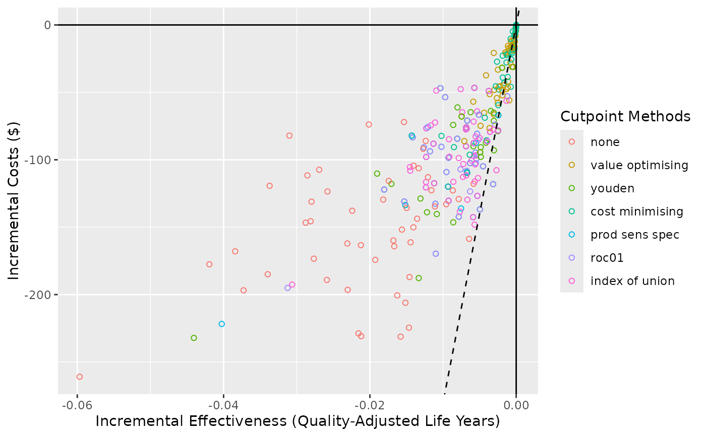

Create a cost-effectiveness plot.
Usage
# S3 method for class 'predictNMBsim'
ce_plot(
object,
ref_col,
wtp,
show_wtp = TRUE,
methods_order = NULL,
rename_vector,
shape = 21,
wtp_linetype = "dashed",
add_prop_ce = FALSE,
...
)Arguments
- object
A
predictNMBsimobject.- ref_col
Which cutpoint method to use as the reference strategy when calculating the incremental net monetary benefit. Often sensible to use a "all" or "none" approach for this.
- wtp
A
numeric. The willingness to pay (WTP) value used to create a WTP threshold line on the plot (ifshow_wtp = TRUE). Defaults to the WTP stored in thepredictNMBsimobject.- show_wtp
A
logical. Whether or not to show the WTP threshold.- methods_order
The order (within the legend) to display the cutpoint methods.
- rename_vector
A named vector for renaming the methods in the summary. The values of the vector are the default names and the names given are the desired names in the output.
- shape
The
shapeused forggplot2::geom_point(). Defaults to 21 (hollow circles). Ifshape = "method"orshape = "cost-effective"(only applicable whenshow_wtp = TRUE) , then the shape will be mapped to that aesthetic.- wtp_linetype
The
linetypeused forggplot2::geom_abline()when making the WTP. Defaults to"dashed".- add_prop_ce
Whether to append the proportion of simulations for that method which were cost-effective (beneath the WTP threshold) to their labels in the legend. Only applicable when
show_wtp = TRUE.- ...
Additional (unused) arguments.
Details
This plot method works with predictNMBsim objects that are created
using do_nmb_sim(). Can be used to visualise the simulations on a
cost-effectiveness plot (costs vs effectiveness)
Examples
# \donttest{
get_nmb_evaluation <- get_nmb_sampler(
qalys_lost = function() rnorm(1, 0.33, 0.03),
wtp = 28000,
high_risk_group_treatment_effect = function() exp(rnorm(n = 1, mean = log(0.58), sd = 0.43)),
high_risk_group_treatment_cost = function() rnorm(n = 1, mean = 161, sd = 49)
)
sim_obj <- do_nmb_sim(
sample_size = 200, n_sims = 50, n_valid = 10000, sim_auc = 0.7,
event_rate = 0.1, fx_nmb_training = get_nmb_evaluation, fx_nmb_evaluation = get_nmb_evaluation
)
ce_plot(sim_obj, ref_col = "all")
#> Ignoring unknown labels:
#> • shape : "list(`NA` = NULL)"

# }